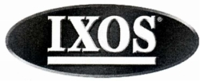
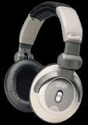
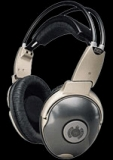

IXOS（イクソス）
ケーブル等のアクセサリーを製造する英国のブランド。2000年11月頃、DJレコードレーベル、Ministry of Soundのスタジオで開発されたとする
「dj」で始まる型番のヘッドフォンが4機種紹介された。代理店はハイ・ファイ・ジャパン。サイト開設時（2009年）に本国のサイトを見ると、インナーイヤー型はあるが、オーバーヘッド型のヘッドフォンは製造していないようだだった。「Ministry
of
Sound」というブランド名で記載される場合もあるようである。
ヘッドフォンについては、完全にネオジウム磁石が主流となった時代に、あえて上級機にコバルト磁石を採用していた。外装部品はよく見かける汎用品を使用している。なおdj1001、dj1003については2000年頃の雑誌広告より高価格の代理店サイトデーターがあるので、値上げがあった可能性がある。


（左 dj1001 右 dj1004)